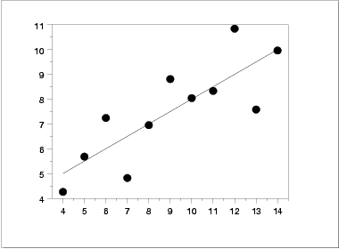
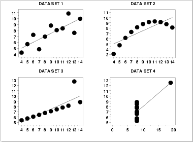

|
1.
Exploratory Data Analysis
1.1. EDA Introduction
|
|||
| Anscombe Example | A simple, classic (Anscombe) example of the central role that graphics play in terms of providing insight into a data set starts with the following data set: | ||
| Data |
X Y 10.00 8.04 8.00 6.95 13.00 7.58 9.00 8.81 11.00 8.33 14.00 9.96 6.00 7.24 4.00 4.26 12.00 10.84 7.00 4.82 5.00 5.68 |
||
| Summary Statistics |
If the goal of the analysis is to compute summary statistics plus
determine the best linear fit for Y as a function of
X, the results might be given as:
Mean of X = 9.0 Mean of Y = 7.5 Intercept = 3 Slope = 0.5 Residual standard deviation = 1.237 Correlation = 0.816 The above quantitative analysis, although valuable, gives us only limited insight into the data. |
||
| Scatter Plot |
In contrast, the following simple
scatter plot of the data
 suggests the following:
|
||
| Three Additional Data Sets |
This kind of characterization for the data serves as
the core for getting insight/feel for the data. Such
insight/feel does not come from the quantitative statistics;
on the contrary, calculations of quantitative statistics such as
intercept and slope should be subsequent to the
characterization and will make sense only if the
characterization is true. To illustrate the loss of
information that results when the graphics insight step is
skipped, consider the following three data sets [Anscombe data
sets 2, 3, and 4]:
X2 Y2 X3 Y3 X4 Y4 10.00 9.14 10.00 7.46 8.00 6.58 8.00 8.14 8.00 6.77 8.00 5.76 13.00 8.74 13.00 12.74 8.00 7.71 9.00 8.77 9.00 7.11 8.00 8.84 11.00 9.26 11.00 7.81 8.00 8.47 14.00 8.10 14.00 8.84 8.00 7.04 6.00 6.13 6.00 6.08 8.00 5.25 4.00 3.10 4.00 5.39 19.00 12.50 12.00 9.13 12.00 8.15 8.00 5.56 7.00 7.26 7.00 6.42 8.00 7.91 5.00 4.74 5.00 5.73 8.00 6.89 |
||
| Quantitative Statistics for Data Set 2 |
A quantitative analysis on data set 2 yields
Mean of X = 9.0 Mean of Y = 7.5 Intercept = 3 Slope = 0.5 Residual standard deviation = 1.237 Correlation = 0.816 |
||
| Quantitative Statistics for Data Sets 3 and 4 |
Remarkably, a quantitative analysis on data sets 3 and 4 also yields
Mean of X = 9.0 Mean of Y = 7.5 Intercept = 3 Slope = 0.5 Residual standard deviation = 1.236 Correlation = 0.816 (0.817 for data set 4) |
||
| Scatter Plots |

|
||
| Interpretation of Scatter Plots |
Conclusions from the scatter plots are:
|
||
| Importance of Exploratory Analysis |
These points are exactly the substance that provide
and define "insight" and "feel" for a data set. They are the
goals and the fruits of an open exploratory data analysis
(EDA) approach to the data. Quantitative statistics are not wrong
per se, but they are incomplete. They are incomplete because they
are numeric summaries which in the summarization
operation do a good job of focusing on a particular aspect
of the data (e.g., location, intercept, slope, degree of
relatedness, etc.) by judiciously reducing the data to a few
numbers. Doing so also filters the data, necessarily
omitting and screening out other sometimes crucial information in
the focusing operation. Quantitative statistics focus but also
filter; and filtering is exactly what makes the quantitative
approach incomplete at best and misleading at worst.
The estimated intercepts (= 3) and slopes (= 0.5) for data sets 2, 3, and 4 are misleading because the estimation is done in the context of an assumed linear model and that linearity assumption is the fatal flaw in this analysis. |
||
| The EDA approach of deliberately postponing the model selection until further along in the analysis has many rewards, not the least of which is the ultimate convergence to a much-improved model and the formulation of valid and supportable scientific and engineering conclusions. | |||